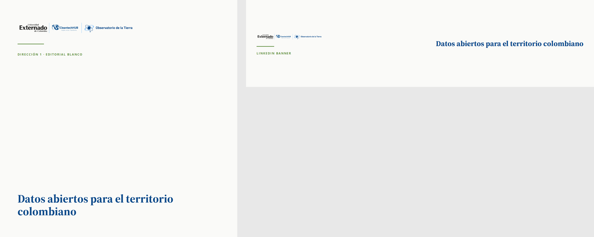
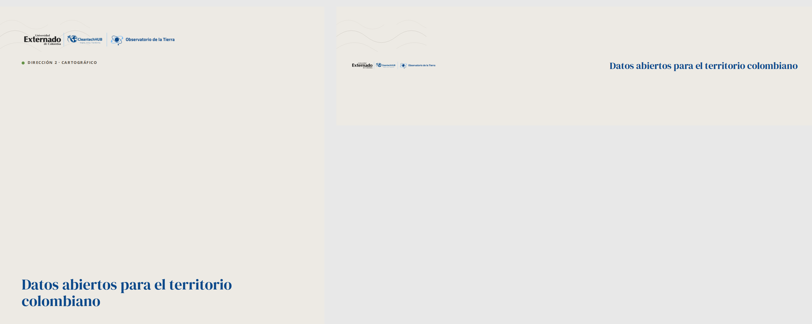
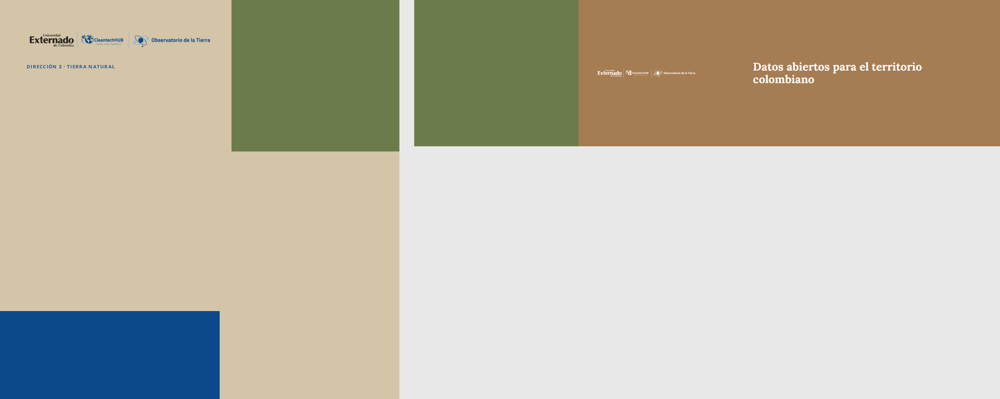
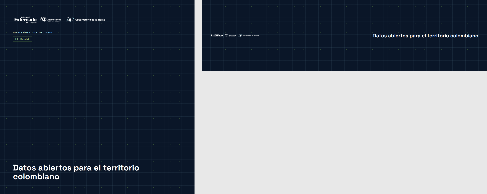
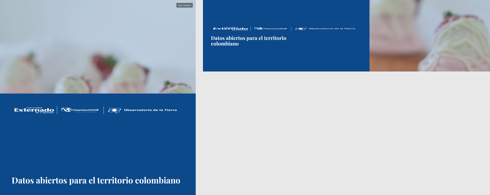

1 · Editorial blanco
Campo blanco o off-white, tipografía azul profundo, una regla verde fina, mucho aire.
Paleta
- #FAFAF8 · fondo
- #0C498A · texto principal
- #669348 · regla / acento
- #1A1A1A · cuerpo secundario
Tipografía
Open Sans (UI, etiquetas) + Source Serif 4 (titular)

2 · Cartográfico
Curvas de nivel SVG de bajo contraste sobre neutro claro, acento verde pequeño.
Paleta
- #EDEAE4 · fondo
- #5C5348 · texto
- #669348 · acento
- #0C498A · titular
Tipografía
Open Sans + DM Serif Display

3 · Tierra natural
Paleta tierra apagada (arena, arcilla, oliva, azul profundo), bloques planos sólidos.
Paleta
- #D4C4A8 · arena
- #A67C52 · arcilla
- #6B7B4C · oliva
- #0C498A · azul profundo
Tipografía
Open Sans + Lora

4 · Datos / grid
Azul marino con grilla fina y puntos en cian y verde; sensación técnica.
Paleta
- #0A1628 · fondo
- #B2EEFA · grilla / acento
- #669348 · puntos
- #E8EDF2 · texto
Tipografía
Open Sans + Space Grotesk

5 · Foto + bloque
Paisaje colombiano con bloque sólido detrás del texto (sin gradientes a sangre).
Paleta
- #0C498A · bloque
- #FFFFFF · texto
- #669348 · acento opcional
- #1A1A1A · crédito foto
Tipografía
Open Sans + Playfair Display
Foto: Unsplash, photo-1563729784474-d77dbb933a9e (Colombia).
